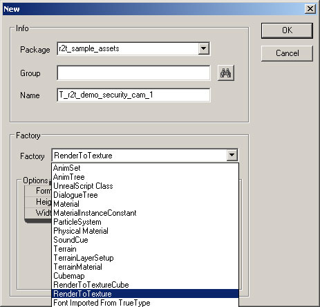
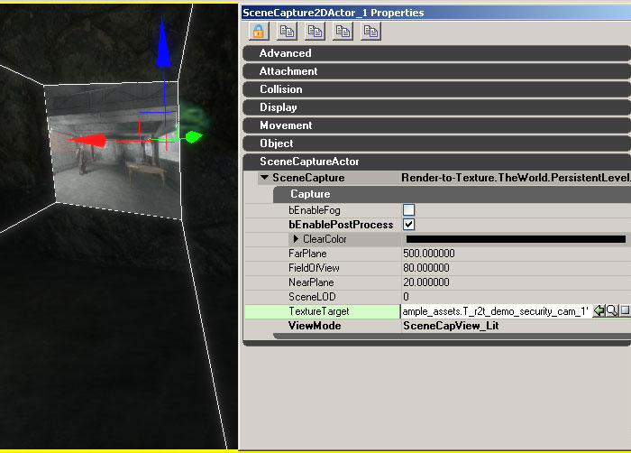
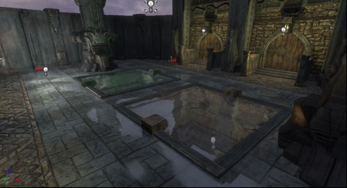

UDN
Search public documentation:
RenderToTextureKR
English Translation
日本語訳
中国翻译
Interested in the Unreal Engine?
Visit the Unreal Technology site.
Looking for jobs and company info?
Check out the Epic games site.
Questions about support via UDN?
Contact the UDN Staff
日本語訳
中国翻译
Interested in the Unreal Engine?
Visit the Unreal Technology site.
Looking for jobs and company info?
Check out the Epic games site.
Questions about support via UDN?
Contact the UDN Staff
렌더 투 텍스처 (Render to Texture)
개요
Render Target (렌더 타겟) 텍스처 만들기

Render-to-texture 자원에는 두 종류가 있으며, 각각 다른 화면 캡처 타입에 사용됩니다:- RenderToTexture - 2D, 반사 및 포탈 화면의 캡처에 사용됩니다.
- RenderToTextureCube - 큐브맵 화면을 캡처하는 데 사용됩니다.
 Render-to-texture 를 표면에 적용할 준비가 되면, 이를 보통의 정적 텍스처 자원에서처럼 소재 표식인 TextureSampler 를 사용해서 소재내에 배치할 수 있습니다.
다음에는 실제로 무엇인가를 render-to-texture 자원에 렌더하는 방법을 보여드리겠습니다.
Render-to-texture 를 표면에 적용할 준비가 되면, 이를 보통의 정적 텍스처 자원에서처럼 소재 표식인 TextureSampler 를 사용해서 소재내에 배치할 수 있습니다.
다음에는 실제로 무엇인가를 render-to-texture 자원에 렌더하는 방법을 보여드리겠습니다.
HDR 지원
현재로서는 오직 RGBA render-to-texture 자원만을 만들 수 있습니다. 부동 소수점 HDR 타겟에 대한 지원은 장차 추가될 것입니다.화면을 텍스처에 렌더하기
SceneCapture2DActor
SceneCapture2DActor 를 사용하면 화면을 마치 시각 절두체의 근접 평면 위로 투영된 것처럼 캡처할 수 있습니다. 이 액터 가운데 하나를 레벨에 배치하면, 캡처된 화면의 모습을 보여주는 시각 절두체가 표시되는 것을 볼 수 있습니다. 액터의 위치와 방향은 캡처된 화면의 시야를 배치하거나 방향을 정하는데 사용됩니다. SceneCapture 액터가 스크립트된 시퀀스에 의해 움직이거나 물리에 의해 조종되기를 원할 경우에는 이를 다른 액터에 첨부할 수도 있습니다.
이 액터는 단지 SceneCapture2DComponent 를 담아두는 용기라는 점을 주지하십시요. 각 SceneCapture 요소의 타입에 대해서는 나중에 이 문서에서 자세히 설명합니다. 렌더링이 발생하기 전에, SceneCapture 액터는 렌더링할 텍스처 타겟을 가지고 있어야 합니다. SceneCapture 요소의 TextureTarget 속성을 설정해서 render-to-texture 자원을 SceneCapture 액터에 배정할 수 있습니다.SceneCaptureCubeMapActor
SceneCaptureCubeMapActor 는 화면을 6개의 별도의 패스—큐브의 각 면당 하나씩-로 렌더한다는 점 외에는 SceneCapture2DActor 와 비슷합니다. 이는 눈에 띄게 비싸게 먹히는 작업이므로, 낮은 레벨의 디테일 설정을 사용할 것이 권장됩니다. 또한 캡처는 "RenderToTextureCube" 자원을 그 타겟 텍스처로 사용할 것을 요합니다. 기본 "RenderToTexture" 자원의 사용은 오직 하나의 2D 표면을 만들어내며, 큐브맵의 화면 캡처에는 사용할 수 없습니다. "RenderToTextureCube" 를 만드는 단계는 "RenderToTexture" 자원 만들기와 비슷합니다. 이 액터는 단지 SceneCaptureCubeComponent 를 담아두는 용기라는 점을 주지하십시요. 각 SceneCapture 요소의 타입에 대해서는 나중에 이 문서에서 자세히 설명합니다.SceneCaptureReflectActor (다이나믹 반영)
SceneCaptureReflectActor 는 화면을 다이나믹하게 반영할 수 있도록 합니다. 이 타입의 액터를 레벨에 배치하면, 반영하는 표면에 반사되고 알맞게 잘라진 뷰 캡처를 화면에 만들어 줍니다. 거울의 표면은 액터와 같은 방향을 향하도록 방위가 조정됩니다. 액터의 위치도 중요합니다. 이는 거울 평면의 위치를 변경하고 따라서 화면의 잘린 부분의 위치도 변경하기 때문입니다. 결과로서 나타나는 반영에 대해 유의할 한가지 중요한 점은 render-to-texture 자원은 ScreenAlign 옵션이 true 로 설정된 소재 표식 ScreenPosition 과, 빨강과 초록 채널만을 사용하는 소재 표식 ComponentMask 을 사용해서 접근할 수 있다는 것입니다. 이것이 필요한 이유는 반영의 계산이 텍스처가 화면 전체를 덮고 있는 것처럼 매핑되어 있다는 전제하에 이루어지기 때문입니다. 다음의 이미지는 필요한 소재 노드를 잘 설명해 줍니다: 이 액터는 단지 SceneCaptureReflectComponent 를 담아두는 용기라는 점을 주지하십시요. 각 SceneCapture 요소의 타입에 대해서는 이 문서에서 나중에 자세히 설명합니다.
이 액터는 단지 SceneCaptureReflectComponent 를 담아두는 용기라는 점을 주지하십시요. 각 SceneCapture 요소의 타입에 대해서는 이 문서에서 나중에 자세히 설명합니다.
SceneCapturePortalActor
SceneCapturePortalActor 는 화면이 다른 위치의 뷰포인트로부터 마치 포탈의 표면에 매핑된 것처럼 렌더되도록 해줍니다. 이 액터는 단지 SceneCapturePortalComponent 를 담아두는 용기라는 점을 주지하십시요. 각 SceneCapture 요소의 타입에 대해서는 이 문서에서 나중에 자세히 설명합니다.SceneCaptureComponents
이들 컴포넌트는 화면을 텍스처 타겟에 캡처합니다. 각 컴포넌트가 레벨에 화면 캡처 탐색기를 배치하는 실제적인 작업을 하므로, 화면은 레벨의 메인 뷰를 배후 버퍼에 렌더하기 전에 별도의 패스에서 렌더됩니다. 이들 컴포넌트는 어떤 다른 타입의 액터에도 첨부할 수 있습니다. 모든 SceneCaptureComponent 타입은 수정이 가능한 공통의 속성 세트를 가지고 있습니다. 각 컴포넌트는 화면을 렌더하는 타겟 텍스처를 가지고 있습니다:- TextureTarget - 결과로서 나타나는 화면 캡처를 위한 render-to-texture 자원. 화면 캡처는 타겟 텍스처에 배정되기 전에는 한 아무것도 렌더하지 않는다는 점에 유의하십시요.
- bEnablePostProcess - 화면에 적용된 포스트프로세스 단계를 유효화 또는 무효화 합니다.
- bEnableFog - HeightFog (하이트포그) 렌더링을 유효화 또는 무효화 합니다.
- ClearColor - 텍스처 타겟용의 배경 지우기 색깔.
- ViewMode - 다른 뷰 및 조명의 설정을 열거합니다. 이는 다음의 모드들을 이용할 수 있습니다:
| 모드 | 설명 |
| SceneCapView_Lit | 다이나믹한 그림자와 조명을 가진 UE3 화면의 기본 렌더링 모드 |
| SceneCapView_Unlit | 화면을 렌더링할 때 그림자나 조명 패스를 사용하지 않음 |
| SceneCapView_LitNoShadows | 기본 조명 렌더링 모드와 같으나 다이나믹 그림자가 없음 |
| SceneCapView_Wire | 화면의 모든 기하도형이 철사프레임 모드를 사용해서 렌더됨 |
- SceneLOD - 화면의 모든 기하도형에 대해 최대 디테일 레벨 (LOD) 을 설정. 0은 가장 높은 LOD 설정을 표시합니다. (현재 실행되지 않음)
- FrameRate - 화면을 캡처하는 FPS (1초당 프레임의 수) 속도. 예를 들어, 이 값이 30 이면 화면을 30 FPS로 캡처합니다. FrameRate 값이 0 일 경우에는 화면은 단 한번만 캡처됩니다. 이것은 특별한 화면 캡처를 계속해서 업데이트할 필요가 없다는 사실이 명백할 때 유용합니다.
- PostProcess - 캡처에 의해 사용되는 일련의 포스트프로세스. 각 화면 캡처가 사용할 수 있는 커스텀 포스트프로세스를 지정할 수도 있습니다. (이 페이지 하단의 알려진 제한사항 참고)
SceneCapture2DComponent
이 컴포넌트는 SceneCapture2DActor 에서 설명한 것처럼 화면의 2D 캡처를 처리합니다. 이는 이러한 종류의 렌더링에 필요한 상태를 관리하고, 캡처를 별도의 패스에서 렌더하기 위해 현재 화면에 FSceneCaptureProbe2D 를 추가합니다. 다음은 이 종류의 캡처 컴포넌트 특유의 속성들입니다 :- FieldOfView - 뷰의 투영을 계산하는데 사용되는 수평 시야 범위.
- NearPlane - 가까운 쪽의 잘린 평면을 나타내는, 화면과 일직선인 시각적 거리.
- FarPlane - 먼 쪽의 잘린 평면을 나타내는, 화면과 일직선인 시각적 거리. 완전히 먼 쪽의 잘린 평면의 너머에 있는 기하도형은 모두 도태됩니다 (렌더되지 않습니다). FarPlane 값을 낮추면 더 나은 성과를 얻게 됩니다.
- bUpdateMatrices - 이 플래그가 false 로 설정되면 뷰 및 투영 매트릭스는 자동으로 업데이트되지 않고, 수동으로 설정되어야 합니다. 이것은 화면이 어떻게 렌더링 되는지에 대한 콘트롤이 좀더 필요한 게임플레이 코드에 유용합니다.
SceneCaptureCubeMapComponent
이 컴포넌트는 SceneCaptureCubeActor 에서 설명한 것처럼 큐브 맵 Render Target 텍스처의 각 면을 위한 6개 캡처 패스의 렌더링을 처리합니다. 이는 이러한 종류의 렌더링에 필요한 상태를 관리하고, 캡처를 별도의 패스에서 렌더하기 위해 현재 화면에 FSceneCaptureProbeCube 를 추가합니다.- NearPlane - 가까운 쪽의 잘린 평면을 나타내는, 화면과 일직선인 시각적 거리.
- FarPlane - 먼 쪽의 잘린 평면을 나타내는, 화면과 일직선인 시각적 거리. 완전히 먼 쪽의 잘린 평면의 너머에 있는 기하도형은 모두 도태됩니다 (렌더되지 않습니다). FarPlane 값을 낮추면 더 나은 성과를 얻게 됩니다.
SceneCaptureReflectComponent (다이나믹 반영)
이 컴포넌트는 현재의 뷰를 뒤집기 위해 그리고 평면의 뒤에 있는 기하도형을 모두 잘라내기 위해 거울 평면을 사용하여 화면의 렌더링을 처리합니다. 이는 이러한 종류의 렌더링에 필요한 상태를 관리하고, 현재 화면에 FSceneCaptureProbeReflect 를 추가하여 캡처를 별도의 패스에서 렌더합니다.- ScaleFOV - 사용되지 않음
SceneCaptureParaboloidComponent
현재 지원되지 않음.SceneCapturePortalComponent
이 컴포넌트는 화면을 다른 장소에 있는 포탈을 통해 보이는 것처럼 렌더합니다. 이는 캡처의 방향을 정하기 위해 현재 포탈의 방향과 목적지 포탈의 방향을 사용합니다. 현재의 포탈과 목적지 포탈은 둘 다 고유의 독특한 2D render-to-texture 자원을 가지고 있어야 한다는 점을 유의하십시요.- ViewDestination - 이 포탈에서 뷰 위치에 있는 액터. 이는 화면이 캡처되는 지점입니다.
- ScaleFOV - 사용되지 않음
정적 캡처 저장하기
정적 Cube Map 캡처하기
다이나믹 render-to-texture 자원으로부터 정적 텍스처를 만들어내는 데 매우 흔히 사용되는 방법 가운데 하나는 화면으로부터 큐브맵을 생성해내는 것입니다. 다음은 화면으로부터 큐브맵을 생성하는 순서입니다:- SceneCaptureCubeMapActor 를 맵에서 큐브맵을 캡처하고자 하는 장소에 배치합니다.
- 패키지에서 RenderToTextureCube 자원을 새로 만듭니다. 이는 화면이 렌더될 다이나믹 render-to-texture 타겟입니다.
- 2단계의 RenderToTextureCube 를 SceneCaptureCubeMapActor 의 TextureTarget 속성으로 지정합니다.
- 이제 화면이 다이나믹 render-to-texture 타겟으로 캡처됩니다. 이 다이나믹 텍스처를 오른쪽 클릭, 콘텍스트 메뉴에서 Create Static Texture... 를 선택하면 스냅사진들을 저장할 수 있습니다. 이렇게 하면 매번 6개의 상응하는 면에 대한 텍스처와 함께 새 큐브맵 텍스처가 만들어집니다.
- SceneCaptureCubeMapActor 를 레벨의 다른 장소로 옮겨 4단계를 되풀이하면 정적 캡처를 더 얻을 수 있습니다.
- 정적 큐브 텍스처의 생성을 마친 후에는 레벨에 추가했던 임시 SceneCaptureCubeMapActor 를 없애버릴 수 있으며, 그와 함께 사용된 RenderToTextureCube 자원을 지울 수도 있습니다.
예제
